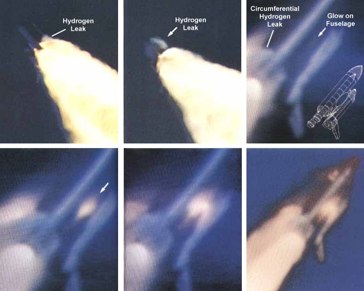
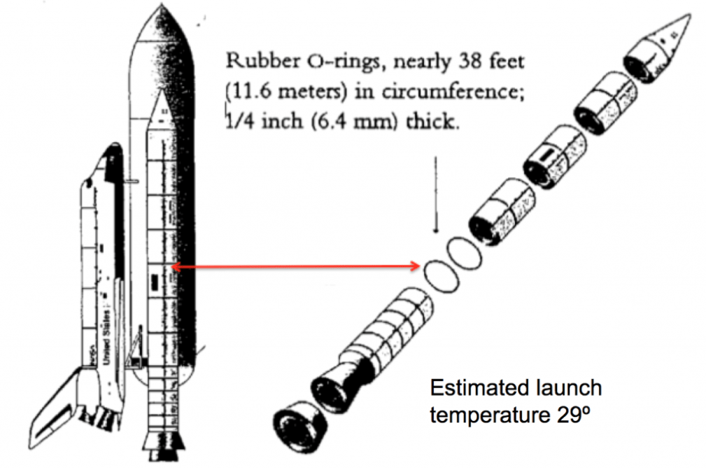

Analyse du risque de défaillance des joints toriques de la navette Challenger
Préambule: Les explications données dans ce document sur le contexte de l'étude sont largement reprises de l'excellent livre d'Edward R. Tufte intitulé Visual Explanations: Images and Quantities, Evidence and Narrative, publié en 1997 par Graphics Press et réédité en 2005, ainsi que de l'article de Dalal et al. intitulé Risk Analysis of the Space Shuttle: Pre-Challenger Prediction of Failure et publié en 1989 dans Journal of the American Statistical Association.
1 Contexte
Dans cette étude, nous vous proposons de revenir sur l'accident de la navette spatiale Challenger. Le 28 Janvier 1986, 73 secondes après son lancement, la navette Challenger se désintègre (voir Figure 1) et entraîne avec elle, les sept astronautes à son bord. Cette explosion est due à la défaillance des deux joints toriques assurant l'étanchéité entre les parties hautes et basses des propulseurs (voir Figure 2). Ces joints ont perdu de leur efficacité en raison du froid particulier qui régnait au moment du lancement. En effet, la température ce matin là était juste en dessous de 0°C alors que l'ensemble des vols précédents avaient été effectués à une température d'au moins 7 à 10°C de plus.

Figure 1 : Photos de la catastrophe de Challenger.

Figure 2 : Schéma des propulseurs de la navette challenger. Les joints toriques (un joint principale et un joint secondaire) en caoutchouc de plus de 11 mètres de circonférence assurent l'étanchéité entre la partie haute et la partie basse du propulseur.
Le plus étonnant est que la cause précise de cet accident avait été débattue intensément plusieurs jours auparavant et était encore discutée la veille même du décollage, pendant trois heures de télé-conférence entre les ingénieurs de la Morton Thiokol (constructeur des moteurs) et de la NASA. Si la cause immédiate de l'accident (la défaillance des joints toriques) a rapidement été identifiée, les raisons plus profondes qui ont conduit à ce désastre servent régulièrement de cas d'étude, que ce soit dans des cours de management (organisation du travail, décision technique malgré des pressions politiques, problèmes de communication), de statistiques (évaluation du risque, modélisation, visualisation de données), ou de sociologie (symptôme d'un historique, de la bureaucratie et du conformisme à des normes organisationnelles).
Dans l'étude que nous vous proposons, nous nous intéressons principalement à l'aspect statistique mais ce n'est donc qu'une facette (extrêmement limitée) du problème et nous vous invitons à lire par vous même les documents donnés en référence dans le préambule. L'étude qui suit reprend donc une partie des analyses effectuées cette nuit là et dont l'objectif était d'évaluer l'influence potentielle de la température et de la pression à laquelle sont soumis les joints toriques sur leur probabilité de dysfonctionnement. Pour cela, nous disposons des résultats des expériences réalisées par les ingénieurs de la NASA durant les 6 années précédant le lancement de la navette Challenger.
Dans le répertoire module2/exo5/ de votre espace gitlab, vous
trouverez les données d'origine ainsi qu'une analyse pour chacun des
différents parcours proposés. Cette analyse comporte quatre étapes:
- Chargement des données
- Inspection graphique des données
- Estimation de l'influence de la température
- Estimation de la probabilité de dysfonctionnement des joints toriques
Les deux premières étapes ne supposent que des compétences de base en R ou en python. La troisième étape suppose une familiarité avec la régression logistique (généralement abordée en L3 ou M1 de stats, économétrie, bio-statistique, …) et la quatrième étape des bases de probabilités (niveau lycée). Nous vous présentons donc dans la prochaine section une introduction à la régression logistique qui ne s'attarde pas sur les détails du calcul, mais juste sur le sens donné aux résultats de cette régression.
2 Introduction à la régression logistique
Imaginons que l'on dispose des données suivantes qui indiquent pour une cohorte d'individus s'ils ont déclaré une maladie particulière ou pas. Je montre ici l'analyse avec R mais le code python n'est pas forcément très éloigné. Les données sont stockées dans une data frame dont voici un bref résumé:
summary(df) str(df)
Age Malade
Min. :22.01 Min. :0.000
1st Qu.:35.85 1st Qu.:0.000
Median :50.37 Median :1.000
Mean :50.83 Mean :0.515
3rd Qu.:65.37 3rd Qu.:1.000
Max. :79.80 Max. :1.000
'data.frame': 400 obs. of 2 variables:
$ Age : num 75.1 76.4 38.6 70.2 59.2 ...
$ Malade: int 1 1 0 1 1 1 0 0 1 1 ...
Voici une représentation graphique des données qui permet de mieux percevoir le lien qu'il peut y avoir entre l'âge et le fait de contracter cette maladie ou pas:
ggplot(df,aes(x=Age,y=Malade)) + geom_point(alpha=.3,size=3) + theme_bw()
Il apparaît clairement sur ces données que plus l'on est âgé, plus la
probabilité de développer cette maladie est importante. Mais comment
estimer cette probabilité à partir uniquement de ces valeurs binaires
(malade/pas malade)? Pour chaque tranche d'âge (par exemple de 5 ans),
on pourrait regarder la fréquence de la maladie (le code qui suit est
un peu compliqué car le calcul de l'intervalle de confiance pour ce
type de données nécessite un traitement particulier via la fonction
binconf).
age_range=5 df_grouped = df %>% mutate(Age=age_range*(floor(Age/age_range)+.5)) %>% group_by(Age) %>% summarize(Malade=sum(Malade),N=n()) %>% rowwise() %>% do(data.frame(Age=.$Age, binconf(.$Malade, .$N, alpha=0.05))) %>% as.data.frame() ggplot(df_grouped,aes(x=Age)) + geom_point(data=df,aes(y=Malade),alpha=.3,size=3) + geom_errorbar(data=df_grouped, aes(x=Age,ymin=Lower, ymax=Upper, y=PointEst), color="darkred") + geom_point(data=df_grouped, aes(x=Age, y=PointEst), size=3, shape=21, color="darkred") + theme_bw()
L'inconvénient de cette approche est que ce calcul est effectué indépendemment pour chaque tranches d'âges, que la tranche d'âge est arbitraire, et qu'on n'a pas grande idée de la façon dont ça évolue. Pour modéliser cette évolution de façon plus continue, on pourrait tenter une régression linéaire (le modèle le plus simple possible pour rendre compte de l'influence d'un paramètre) et ainsi estimer l'effet de l'âge sur la probabilité d'être malade:
ggplot(df,aes(x=Age,y=Malade)) + geom_point(alpha=.3,size=3) +
theme_bw() + geom_smooth(method="lm")
La ligne bleue est la régression linéaire au sens des moindres carrés et la zone grise dans laquelle est la zone de confiance à 95% de cette estimation (avec les données dont l'on dispose et cette hypothèse de linéarité, la ligne bleue est la plus probable et il y a 95% de chance que la vraie ligne soit dans cette zone grise).
Mais on voit clairement dans cette représentation graphique que cette estimation n'a aucun sens. Une probabilité doit être comprise entre 0 et 1 et avec une régression linéaire on arrivera forcément pour des valeurs un peu extrêmes (jeune ou âgé) à des prédictions aberrantes (négative ou supérieures à 1). C'est tout simplement dû au fait qu'une régression linéaire fait l'hypothèse que \(\textsf{Malade} = \alpha.\textsf{Age} + \beta + \epsilon\), où \(\alpha\) et \(\beta\) sont des nombres réels et \(\epsilon\) est un bruit (une variable aléatoire de moyenne nulle), et estime \(\alpha\) et \(\beta\) à partir des données.
Cette technique n'a pas de sens pour estimer une probabilité et il convient donc d'utiliser ce que l'on appelle une régression logistique:
ggplot(df,aes(x=Age,y=Malade)) + geom_point(alpha=.3,size=3) +
theme_bw() +
geom_smooth(method = "glm",
method.args = list(family = "binomial")) + xlim(20,80)
Ici, la bibliothèque ggplot fait tous les calculs de régression
logistique pour nous et nous montre uniquement le résultat "graphique"
mais dans l'analyse que nous vous proposerons pour Challenger, nous
réalisons la régression et la prédiction à la main (en R ou en python
selon le parcours que vous choisirez) de façon à pouvoir effectuer si
besoin une inspection plus fine. Comme avant, la courbe bleue indique
l'estimation de la probabilité d'être malade en fonction de l'âge et
la zone grise nous donne des indications sur l'incertitude de cette
estimation, i.e., "sous ces hypothèses et étant donné le peu de
données qu'on a et leur variabilité, il y a 95% de chances pour que la
vraie courbe se trouve quelque part (n'importe où) dans la zone
grise".
Dans ce modèle, on suppose que \(P[\textsf{Malade}] = \pi(\textsf{Age})\) avec \(\displaystyle\pi(x)=\frac{e^{\alpha.x + \beta}}{1+e^{\alpha.x + \beta}}\). Cette formule (étrange au premier abord) a la bonne propriété nous donner systématiquement une valeur comprise entre 0 et 1 et de bien tendre rapidement vers \(0\) quand l'âge tend vers \(-\infty\) et vers \(1\) quand l'âge tend vers \(+\infty\) (mais ce n'est pas bien sûr pas la seule motivation).
En conclusion, lorsque l'on dispose de données événementielles (binaires) et que l'on souhaite estimer l'influence d'un paramètre sur la probabilité d'occurrence de l'évènement (maladie, défaillance, …), le modèle le plus naturel et le plus simple est celui de la régression logistique. Notez, que même en se restreignant à une petite partie des données (par exemple, uniquement les patients de moins de 50 ans), il est possible d'obtenir une estimation assez raisonnable, même si, comme on pouvait s'y attendre, l'incertitude augmente singulièrement.
ggplot(df[df$Age<50,],aes(x=Age,y=Malade)) + geom_point(alpha=.3,size=3) +
theme_bw() +
geom_smooth(method = "glm",
method.args = list(family = "binomial"),fullrange = TRUE) + xlim(20,80)